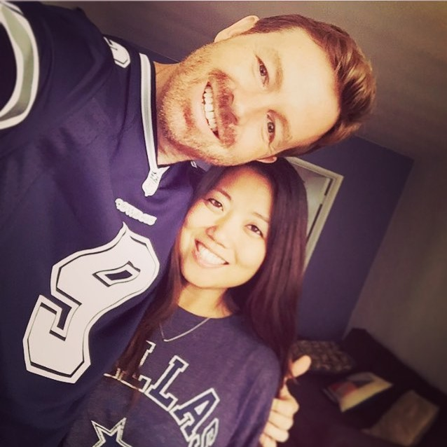

M a l i b u . C A | S a t u r d a y . J u n e 3 0 . 2 0 1 8
Our Story
Jeremy and Naeun met in 2014 while swiping through a reputable dating app called Tinder. They had their first date at The Well in Hollywood, where they got into a heated debate over whether people would be more likely to be able to name four Beatles (Naeun) or four NFL quarterbacks (Jeremy). After polling various bystanders who lived in Hollywood and apparently did not watch football, Naeun won by a large margin (Jeremy disputes this characterization). As a reward, Jeremy paid for four of her vodka sodas. It was Naeun's first Tinder date ever, and Jeremy's last Tinder date ever.
Jeremy and Naeun soon discovered they would probably never have met had it not been for online dating. He was an introverted personal trainer who liked to relieve stress at the gym; she was an extroverted lawyer who liked to relieve stress at bars. On a night out, he liked to leave the bar by 10 p.m.; the earliest she liked to arrive was at 10:30 p.m. Jeremy believes that if you are early, you are on time, and if you are on time, you are late; Naeun believes being early is incredibly rude. But somehow, inexplicably, it all ended up making total sense, kinda like a salted caramel. Because sometimes, the right person isn't the one who is just like you--the right person is the one who helps make you better. When you meet that person, you should probably marry them. So that's what Jeremy and Naeun decided to do, and that's why you're here.
Thanks for visiting our website!
xoxo Jeremy and Naeun (and Penny)

Wedding Details
When
June 30, 2018 at 5:00 pm
Where
Calamigos Ranch
327 Latigo Canyon Rd
Malibu, CA 90265
Hotel Information
For those coming in from out of town, please see below a list of hotels that are closest to our wedding venue. We also recommend you consider renting accommodations from VRBO and Airbnb. Because so many of our guests have expressed interest in attractions all across the city, we have elected not to do a room block and encourage you to stay in the location most convenient for your plans.
Naeun and Jeremy, along with several members of the bridal party, will be staying at the Surfrider Malibu Inn, a small hotel off the coast of Malibu that is about a 20-minute drive to the wedding venue. If you are interested in staying at the Surfrider, we strongly suggest you make reservations as soon as possible, as it is one of the newest and most popular beach-side hotels and sells out very quickly.
$193+ per night plus tax
14-minute drive, 9 miles from venue
Things to do in Los Angeles
After considering eloping in far-off, exotic locations, we realized that we wanted nothing more than to tie the knot in the city that brought us together: Los Angeles. For those visiting Los Angeles for the first time, we are so excited to welcome you to our adopted home. Below is a list of some of our favorite LA attractions, listed from west to east. No matter where you go, expect traffic and difficult parking conditions. We strongly recommend you use ride-sharing services to avoid road rage and frustration. We hope you love our city as much as we do!
The Santa Monica Pier is at the intersection of Colorado Avenue and the Pacific Ocean. Stop by for beautiful views of the ocean and great beachside restaurants. Make a full day of it at the small amusement park on the southside of the pier, or rent bikes and head down the beach bike path. One block east, you will find plenty of shopping at the 3rd Street Promenade in downtown Santa Monica.
Two miles south of Santa Monica pier is the Venice Beach Boardwalk. Check out tons of street art, street performers, and shops full of funky souvenirs. On the way, you’ll see Muscle Beach and plenty of places to stop and get a beach cocktail. The bike path from Santa Monica runs through the Venice Boardwalk.
The Getty has two museum locations, both of which have amazing art collections. The Getty Villa is located in the Pacific Palisades off of the Pacific Coast Highway. Modeled after an Italian Villa, it is known for its beautiful collection of ancient Greek and Roman artifacts. Advanced reservations are required, so plan ahead if you’d like to visit.
The Getty Center is a larger museum located just north of the Brentwood area. It has a great collection of classic and contemporary paintings, photography, and other exhibits, and does not require advance reservations. The Getty Center is celebrating its 20th anniversary this year and will be hosting a ton of events to celebrate.
The Grove is one of Los Angeles’s most popular outdoor shopping malls. Stop by for food, shopping, and lively music! Grab a bite at the Original Farmer’s Market, a collection of food stalls and sit-down eateries, including specialty food stores like Light My Fire, which carries hundreds of hot sauces from around the world. The Farmer’s Market is considered a historical landmark and is connected to the Grove.
The Los Angeles County Museum of Art is the largest museum in Los Angeles, and one of our favorites. The LACMA art collection is spread out across several buildings and has everything from classic paintings to contemporary photography exhibits. It is most well-known for its Urban Light installation, a collection of hundreds of street lamps restored from the 1920s and 1930s. If you need a food break, check out one of the taco trucks lined up down Wilshire Boulevard.
If you follow Jeremy on Instagram, you’ll recognize the beautiful views of Runyon Canyon, one of LA’s most popular hiking trails. Famous for its celebrity sightings and off-leash dog policy, Runyon is the place to go for a quick hike and tanned, hairless eye-candy. On a clear day, you can see the downtown LA skyline to the east, and the Pacific Ocean on the west. Do the main loop in 90 minutes, or keep going up one of the mountain trails for a longer hike!
Hollywood Boulevard has some of the city’s most iconic photo ops. Find your favorite celebrity’s name on the Walk of Fame, visit the TCL Chinese Theater, relive the Oscars at the Dolby Theater, and take your photos/run away from Spiderman impersonators. Start from the intersection of Hollywood and Highland and plan to walk around on foot. For a list of suggested attractions in the area, visit the Discover Los Angeles website.
The Peterson Auto Museum is one of the largest car museums in the world. Check out hundreds of cars spread out across 25 galleries. For tickets to the Vault collection, purchase tickets in advance! Children under 10 are not allowed in the Vault exhibit.
Los Angeles has the largest Korean population outside of Korea—and Koreans love to eat. That’s why Koreatown LA has the best Korean restaurants in America. There are too many to name, but the LA Times recently compiled a good list of some of the best. The heart of Koreatown spans from 6th Street to Olympic Boulevard, between Western and Vermont. Stop by for great food, drinks, and karaoke!
Located in Los Feliz (and the site of our engagement photos), the Griffith Observatory has a little something for everyone: hiking trails, mountain views, ocean views, a planetarium, and great shots of the Hollywood sign. Enjoy the delicious restaurant scene in the neighborhood of Los Feliz before or after your visit.
Exposition Park, located near downtown Los Angeles, features some of the city’s greatest family-friendly attractions, including the Natural History Museum, the California Science Center, and the Rose Garden. Please see a map of the entire park here. If you’d like to see the Endeavor Space Shuttle exhibit at the California Science Center, be sure to make reservations in advance.
The Santa Monica Pier is at the intersection of Colorado Avenue and the Pacific Ocean. Stop by for beautiful views of the ocean and great beachside restaurants. Make a full day of it at the small amusement park on the southside of the pier, or rent bikes and head down the beach bike path. One block east, you will find plenty of shopping at the 3rd Street Promenade in downtown Santa Monica.
Two miles south of Santa Monica pier is the Venice Beach Boardwalk. Check out tons of street art, street performers, and shops full of funky souvenirs. On the way, you’ll see Muscle Beach and plenty of places to stop and get a beach cocktail. The bike path from Santa Monica runs through the Venice Boardwalk.
The Getty has two museum locations, both of which have amazing art collections. The Getty Villa is located in the Pacific Palisades off of the Pacific Coast Highway. Modeled after an Italian Villa, it is known for its beautiful collection of ancient Greek and Roman artifacts. Advanced reservations are required, so plan ahead if you’d like to visit.
The Getty Center is a larger museum located just north of the Brentwood area. It has a great collection of classic and contemporary paintings, photography, and other exhibits, and does not require advance reservations. The Getty Center is celebrating its 20th anniversary this year and will be hosting a ton of events to celebrate.
The Grove is one of Los Angeles’s most popular outdoor shopping malls. Stop by for food, shopping, and lively music! Grab a bite at the Original Farmer’s Market, a collection of food stalls and sit-down eateries, including specialty food stores like Light My Fire, which carries hundreds of hot sauces from around the world. The Farmer’s Market is considered a historical landmark and is connected to the Grove.
The Los Angeles County Museum of Art is the largest museum in Los Angeles, and one of our favorites. The LACMA art collection is spread out across several buildings and has everything from classic paintings to contemporary photography exhibits. It is most well-known for its Urban Light installation, a collection of hundreds of street lamps restored from the 1920s and 1930s. If you need a food break, check out one of the taco trucks lined up down Wilshire Boulevard.
If you follow Jeremy on Instagram, you’ll recognize the beautiful views of Runyon Canyon, one of LA’s most popular hiking trails. Famous for its celebrity sightings and off-leash dog policy, Runyon is the place to go for a quick hike and tanned, hairless eye-candy. On a clear day, you can see the downtown LA skyline to the east, and the Pacific Ocean on the west. Do the main loop in 90 minutes, or keep going up one of the mountain trails for a longer hike!
Hollywood Boulevard has some of the city’s most iconic photo ops. Find your favorite celebrity’s name on the Walk of Fame, visit the TCL Chinese Theater, relive the Oscars at the Dolby Theater, and take your photos/run away from Spiderman impersonators. Start from the intersection of Hollywood and Highland and plan to walk around on foot. For a list of suggested attractions in the area, visit the Discover Los Angeles website.
The Peterson Auto Museum is one of the largest car museums in the world. Check out hundreds of cars spread out across 25 galleries. For tickets to the Vault collection, purchase tickets in advance! Children under 10 are not allowed in the Vault exhibit.
Los Angeles has the largest Korean population outside of Korea—and Koreans love to eat. That’s why Koreatown LA has the best Korean restaurants in America. There are too many to name, but the LA Times recently compiled a good list of some of the best. The heart of Koreatown spans from 6th Street to Olympic Boulevard, between Western and Vermont. Stop by for great food, drinks, and karaoke!
Located in Los Feliz (and the site of our engagement photos), the Griffith Observatory has a little something for everyone: hiking trails, mountain views, ocean views, a planetarium, and great shots of the Hollywood sign. Enjoy the delicious restaurant scene in the neighborhood of Los Feliz before or after your visit.
Exposition Park, located near downtown Los Angeles, features some of the city’s greatest family-friendly attractions, including the Natural History Museum, the California Science Center, and the Rose Garden. Please see a map of the entire park here. If you’d like to see the Endeavor Space Shuttle exhibit at the California Science Center, be sure to make reservations in advance.